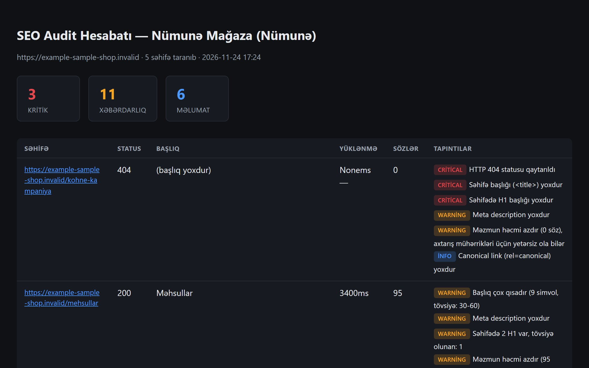
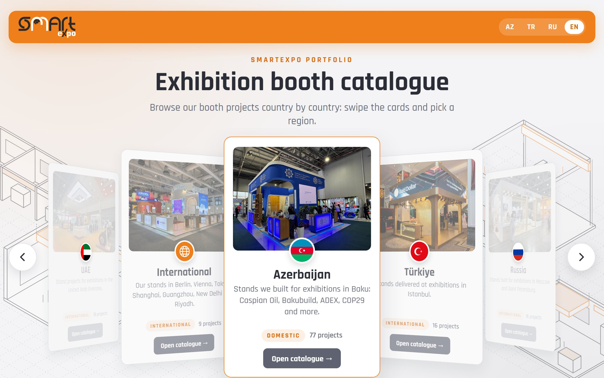
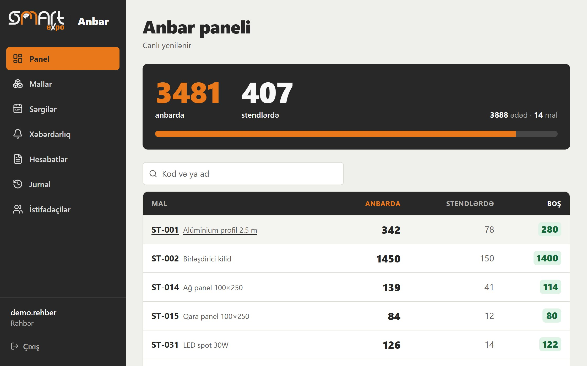

01. Haqqımda
Alpha Media-da IT mütəxəssisiyəm: WordPress saytlar qururam, texniki SEO və sayt idarəsi ilə məşğul oluram. Hər gün real bizneslərin saytları ilə işləyirəm. Sayt dayananda, SSL-in vaxtı bitəndə, Google səhifəni görməyəndə bunu ilk eşidən mən oluram.
Bu işdən çıxan ehtiyacları öz məhsullarıma çevirirəm: saytları izləyən panel, SEO problemlərini tapan alət, şirkət üçün anbar sistemi. Onları AI kod agentləri ilə qururam. İstiqaməti və tələbləri mən təyin edirəm, nəticəni canlı saytda özüm yoxlayıram.
Azərbaycan Texniki Universitetində mexatronika və robototexnika üzrə 3-cü kursda oxuyuram.
02. Təcrübə
-
Apr 2025 — İndi
IT mütəxəssisi · Alpha Media
5 WordPress saytın qurulması və idarəsi, texniki SEO, hosting, domen və SSL işləri, əməkdaşlara texniki dəstək.
- WordPress
- Texniki SEO
- Hosting
- Cloudflare
-
Paralel
Öz məhsullar · SiteMonitor və alətlər
Agentliklər üçün sayt monitorinqi paneli, texniki SEO audit aləti və WordPress plugini, şirkət daxili anbar sistemi. Hamısı canlı istifadə olunur.
- React
- TypeScript
- Node.js
- Python
- AI agentlər
-
Təhsil
Mexatronika və robototexnika · AzTU
Azərbaycan Texniki Universiteti, 3-cü kurs.
03. Layihələr
-
Öz məhsulum · Canlı
SiteMonitor
Veb agentliklər üçün saytları izləyən panel: uptime, SSL, domen və SEO yoxlamaları, e-poçt və Telegram bildirişləri, çox istifadəçi və rollar.
- React + TS
- Node.js
- SQLite
- Fly.io

-
Öz məhsulum
SEO Auditor + WordPress plugin
Saytı gəzib texniki SEO problemlərini vaciblik sırası ilə göstərən alət. Python CLI və WordPress admin panelində işləyən plugin versiyası var, hesabat HTML və PDF formatındadır.
- Python
- Playwright
- PHP
- WP plugin

-
SmartExpo üçün
Stend layihələri kataloqu
Sərgi stendləri şirkətinin layihələrini ölkələr üzrə göstərən 3D karusel və kataloq. Dörd dil (AZ, TR, RU, EN), şəkillər şirkət saytından skriptlə avtomatik sinxron olunur.
- HTML / CSS / JS
- Node skript
- 4 dil
- Vercel

-
Daxili sistem
SmartExpo Anbar
Sərgi stendləri şirkəti üçün anbar sistemi: malların çıxışı və qayıdışı, sərgi hesabatları, Excel import, rəhbər / anbardar / IT rolları.
- React
- Express
- SQLite
- Rollar

Alpha Media üçün WordPress saytlar
04. Xidmətlər
-
WordPress sayt
Şirkət saytı və ya kataloq: qurulma, mobil uyğunluq, sürət, təhlükəsizlik. Çoxdilli səhifələr, hosting, domen və SSL.
-
Texniki SEO audit
Saytı yoxlayıb problemləri vaciblik sırası ilə göstərirəm və düzəldirəm: başlıq və meta, struktur, indeksləmə, sınıq linklər.
-
Monitorinq və baxım
Saytınız dayananda, SSL və ya domen vaxtı bitəndə ilk siz bilirsiniz. Aylıq baxım və yeniləmə.
-
AI + kodla alətlər
Excel-də, kağızda görülən işi sadə veb proqrama çevirirəm: anbar, sifariş, hesabat, rollar, Excel import / export.
Qiymət işin həcminə görədir. Qısa yazın, eyni gün cavab verirəm.
05. Növbəti addım
Gəlin danışaq
Saytınız, SEO-nuz və ya əl ilə görülən bir işiniz var? Qısa yazın, nə edə biləcəyimi deyim.